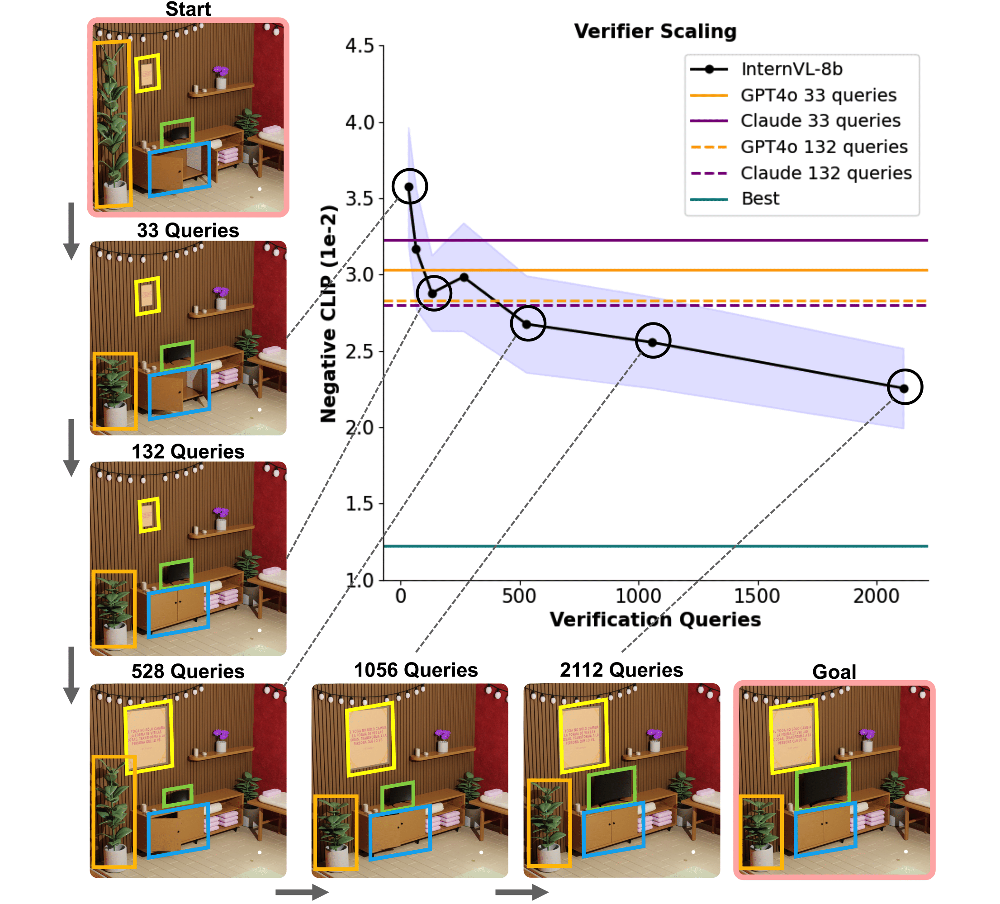

TLDR: BlenderGym benchmarks your VLM system's ability to edit 3D graphics.
Abstract
3D graphics editing is a crucial component in applications like movie production and game design, yet it remains a time-consuming process that demands highly specialized domain expertise. Automating the process is challenging because graphical editing requires performing a variety of tasks, each requiring distinct skill sets. Recently, vision-language models (VLMs) have emerged as a powerful framework for automating the editing process, but their development and evaluation are bottlenecked by the lack of a comprehensive benchmark that requires human-level perception and presents real-world editing complexity.
In this work, we present BlenderGym, a comprehensive VLM system benchmark for 3D graphics editing. BlenderGym evaluates VLM systems through code-based 3D reconstruction tasks. We evaluate closed- and open-source VLM systems and observe that even the state-of-the-art VLM system struggles with tasks relatively easy for human Blender users.
Enabled by BlenderGym, we study how inference scaling on verification impacts VLM's performance on graphics editing tasks. Notably, our findings reveal that the verifier used to guide the scaling of generation can itself be improved through inference scaling, complementing recent insights on inference scaling of LLM generation in coding and math tasks. We further show that inference compute is not uniformly effective and can be optimized by strategically distributing it between generation and verification.
What is BlenderGym?
BlenderGym consists of 245 hand-crafted Blender scenes across 5 key graphics editing tasks: procedural geometry editing, lighting adjustments, procedural material design, blend shape manipulation, and object placement. Each instance in BlenderGym presents a reconstruction task from a start scene to a goal scene. Each start-goal instance includes a base Blender file of the scene setup, a pair of Python scripts that generate the start and goal scene, rendered images for both scenes, and language description of the differences between the two scenes.
Example start-goal scene pairs in BlenderGym for reconstruction.
What can we do with BlenderGym?
Compare the performance of VLM systems for 3D graphcs. We present the results in our Leaderboard.
Inference Scaling for Verification. We explore the inference scaling of VLM verifier that guides the generation by selecting desirable edits and pruning suboptimal ones.

Performance of inference scaling for VLM verifier with InternVL2-8B, Claude3.5 Sonnet, and GPT-4o.
We show in our paper that, as shown by the figure above, VLM verifiers used for guiding generation also benefit from inference scaling,
and that scaled open-source VLM verifiers can exceed the performance of closed-source VLM verifiers.
We further explore the distribution of inference compute between generation and verification. We show with the figure below that (1) the distribution of inference compute significantly
impacts performance, and that (2) the optimal compute ratio between generation and verification varies with
the amount of total compute — more total compute benefits from a higher share of verification.
The impact of compute allocation on VLM system performance. We set VeriRatio(verification compute over total compute) to 0.33, 0.62, and 0.73.